Visualize clone abundance, frequency, and dynamics across groups
Source:R/clonalstatplot.R
ClonalStatPlot.RdClonalStatPlot provides a unified interface for visualizing the abundance, frequency, and dynamics of T cell and B cell clones across experimental groups. It is the most versatile clone visualization function in scplotter, offering multiple plot types for different analytical purposes.
The function operates on the output of scRepertoire::combineTCR(),
scRepertoire::combineBCR(), or
scRepertoire::combineExpression(). Clones are
identified by their CDR3 amino acid sequence, nucleotide sequence, V(D)J gene usage,
or a combination thereof (via clone_call). The function then computes clone-level
statistics (size, fraction, or count of clones) within each group and renders them
using one of ten supported plot types.
A defining feature of ClonalStatPlot is its flexible clone selection system. Clones
can be specified directly by their IDs, or selected programmatically using expression
selectors such as top(), sel(), shared(), uniq(), and
comparison operators (gt(), lt(), eq(), etc.). These selectors
evaluate within the context of each faceting/splitting group, enabling per-group
selection of the most expanded clones, clones shared between conditions, or clones
meeting custom abundance thresholds. See the Clone selection section below
and CloneSelectors for full details.
Clones can also be aggregated into named groups (by passing a named list to
clones), where each group is defined by its own selection expression. In
this mode, the visualization unit becomes the clone group rather than individual
clones, enabling comparisons such as "hyper-expanded clones in condition A" vs.
"hyper-expanded clones in condition B."
Usage
ClonalStatPlot(
data,
clones = "top(10)",
clone_call = "aa",
chain = "both",
values_by = c("count", "fraction", "n"),
plot_type = c("bar", "box", "violin", "heatmap", "pies", "circos", "chord", "sankey",
"alluvial", "trend", "col"),
group_by = "Sample",
groups = NULL,
subgroup_by = NULL,
subgroups = NULL,
order = NULL,
within_subgroup = match.arg(plot_type) != "pies",
relabel = plot_type %in% c("col", "chord", "circos"),
facet_by = NULL,
split_by = NULL,
y = NULL,
xlab = NULL,
ylab = NULL,
...
)Arguments
- data
The product of
scRepertoire::combineTCR(),scRepertoire::combineBCR(), orscRepertoire::combineExpression(). A list of data frames where each element represents a sample, with columns for clone identifiers (CTaa, CTnt, CTgene, etc.) and cell-level metadata.- clones
Which clones to track and visualize. Default:
"top(10)". Accepts three forms: (1) a character vector of clone IDs, (2) a single selection expression string (e.g."top(10)","sel(P17B > 5, group_by = 'Sample')"), or (3) a named list of selection expressions to define clone groups (e.g.list(Expanded = "sel(A > 20, group_by = 'Sample')")). See the Clone selection section for details. When a single unnamed expression is used, individual clones are visualized. When a named list is used, clone groups become the visualization unit.- clone_call
How to identify a clone. One of
"gene"(VDJC gene segment),"nt"(CDR3 nucleotide sequence),"aa"(CDR3 amino acid sequence, default),"strict"(VDJC gene + CDR3 nucleotide), or a custom column name present in the data.- chain
Which TCR/BCR chain(s) to include. One of
"both"(default, both chains combined),"TRA","TRB","TRG","TRD","IGH","IGL", or"IGK". When"both", dual-chain data (e.g., TRA and TRB) is combined.- values_by
The metric to plot on the y-axis. One of
"count"(default, number of cells per clone),"fraction"(proportion of cells per clone within each group), or"n"(equivalent to"count"). See the Value types section.- plot_type
The type of plot to generate. One of
"bar"(default),"box","violin","heatmap","pies","chord"(or"circos"),"sankey"(or"alluvial"),"trend", or"col". See the Plot types section for guidance.- group_by
The column name in the metadata to use for grouping cells (x-axis categories). Default:
"Sample". Only a singlegroup_bycolumn is supported.- groups
The specific groups (levels of
group_by) to include. Default:NULL(all groups included). If a named vector, names are used as display labels (e.g.c(B = "P17B", L = "P17L")renames "P17B" to "B"). For"chord"/"circos", exactly 2 groups are required. For"box","violin","heatmap","pies","sankey", and"trend", at least 2 groups are required.- subgroup_by
The column name in the metadata for subgrouping. Interpretation varies by plot type: for
"box"/"violin", it controls fill grouping; for"heatmap"with"pies", it defines the pie chart composition; for"heatmap"without"pies", it colors row labels. Not supported for"bar","trend", or"col". Default:NULL.- subgroups
The specific subgroups (levels of
subgroup_by) to include. Default:NULL(all subgroups included). If a vector, the same subgroups are applied to all groups. If a named list, different subgroups can be specified per group (names matchgroup_bylevels).- order
A list specifying the order of levels for
group_by. Default:NULL(uses the order present in the data). Lower priority thangroups.- within_subgroup
Whether clone selection (
clones) should be performed within each subgroup separately. Default:TRUEfor most plot types,FALSEfor"pies". WhenTRUE, clone selectors liketop(10)select the top 10 clones within each subgroup rather than across all subgroups combined.- relabel
Whether to relabel clone IDs as "clone1", "clone2", etc., ordered by descending clone size. Default:
TRUEfor"col","chord", and"circos"plot types;FALSEotherwise. Useful when clone IDs are long CDR3 sequences. Only applies when visualizing individual clones (not clone groups).- facet_by
A column name to facet the plot into separate panels. Default:
NULL. Not supported for"col","heatmap", or"pies"plot types (usesplit_byinstead).- split_by
A column name to split the plot into separate subplots (via patchwork). Default:
NULL. Unlikefacet_by, splitting creates independent plots that can have different scales.- y
The y-axis variable. Default:
NULL(auto-determined fromvalues_by). For"bar"plots, can be"TotalSize"(total cells in selected clones) or"Count"(number of selected clones).- xlab
Custom x-axis label. Default:
NULL(auto-generated).- ylab
Custom y-axis label. Default:
NULL(auto-generated based onvalues_by: "Clone Size", "Relative Abundance", or "Number of Clones").- ...
Additional arguments passed to the underlying plot function from plotthis. For example:
For
"bar": seeplotthis::BarPlot()(e.g.position,palette)For
"box": seeplotthis::BoxPlot()(e.g.add_box,comparison)For
"violin": seeplotthis::ViolinPlot()(e.g.add_box,comparison)For
"heatmap"and"pies": seeplotthis::Heatmap()(e.g.palette,show_row_names)For
"sankey": seeplotthis::SankeyPlot()(e.g.flow,node_palette)For
"trend": seeplotthis::TrendPlot()(e.g.line_type,palette)For
"chord": seeplotthis::ChordPlot()For
"col": seeplotthis::BarPlot()(used internally with faceting)
Additional arguments for
"col"plot includefill_by,fill_name,facet_scale,facet_ncol,x_text_angle,aspect.ratio,legend.position, andtheme_args.
Note
ClonalStatPlot requires at least 2 groups for
"box","violin","heatmap","pies","sankey", and"trend"plot types. Only"bar"and"col"work with a single group."chord"/"circos"plots are limited to exactly 2 groups. For more groups, use"sankey"instead.facet_byis not supported for"col","heatmap", and"pies"plot types because these plots use internal faceting. Usesplit_byas an alternative for creating separate subplots.subgroup_byis not supported for"bar","trend", and"col"plot types.When using clone groups (a named list for
clones), therelabelargument has no effect since group names are used directly.Clone selection expressions are evaluated after the data is filtered to the specified
groups. If you reference group names in your expression (e.g.,"sel(P17B > 10)"), ensure those groups are included ingroupsif they differ from the display groups.For
"pies"plots,within_subgroupdefaults toFALSE, meaning clone selection occurs across all subgroups combined. Set toTRUEto select clones within each subgroup independently.
Clone selection
The clones argument accepts three forms:
- Character vector of clone IDs
Directly specifies which clones to track. Clone IDs are matched against the column identified by
clone_call(e.g., CDR3 amino acid sequences whenclone_call = "aa").- Selection expression (single string with parentheses)
A string containing a clone selector function call, e.g.
"top(10)","shared(P17B, P17L, group_by = 'Sample')", or"sel(P17L > 10 & P17B > 0, group_by = 'Sample')". The expression is parsed and evaluated within the data context. Available selectors include:top(n, ...)— select thenlargest clones (by total count)sel(expr, ...)— select clones matching a logical expressionshared(g1, g2, ...)— select clones present in all specified groupsuniq(g1, g2, ...)— select clones unique to group 1gt(g1, g2),lt(g1, g2),eq(g1, g2), etc. — comparison-based selection
All selectors accept
group_by,top,order,within, andoutput_withinarguments. SeeCloneSelectorsfor complete documentation.- Named list of expressions
Defines clone groups. Each element is a selection expression (as above), and the element name becomes the group label. For example:
list(ExpandedInA = "sel(A > 20, group_by = 'Sample')", ExpandedInB = "sel(B > 20, group_by = 'Sample')"). In this mode, the visualization aggregates clones within each group rather than showing individual clones.
By default, clone selection operates within each faceting/splitting group (i.e.,
top(3) selects the top 3 clones per facet). Pass group_by explicitly
within the selector expression to change this behavior.
Plot types
ClonalStatPlot supports ten plot types, each suited to different analytical questions:
"bar"(default)Stacked or grouped bar plot showing the total abundance (size or fraction) of each selected clone across groups. Best for comparing the composition of the top clones between conditions. Requires at least 1 group.
"box"Box plot showing the distribution of individual clone sizes within each group. Useful for assessing whether clone size distributions differ between conditions. Optionally colored by
subgroup_by."violin"Violin plot alternative to box plot, showing the full density distribution of clone sizes. Supports
subgroup_byfor split violins."heatmap"Heatmap where rows are clones (or clone groups) and columns are groups from
group_by. Cell color encodes clone abundance. Whensubgroup_byis provided, rows are split by group and colored by subgroup.facet_byis not supported; usesplit_byinstead."pies"Heatmap variant where each cell contains a pie chart showing the composition of the clone (or clone group) across
subgroup_bylevels. The pie size reflects total abundance.subgroup_byis required.within_subgroupdefaults toFALSEfor this plot type."chord"/"circos"Chord diagram showing clone flow between exactly 2 groups. Clones are represented as arcs, with ribbons indicating shared clones. For more than 2 groups, use
"sankey"instead."sankey"/"alluvial"Sankey (alluvial) diagram showing clone dynamics across groups. Flows are colored by clone groups (when using clone groups) or by individual clones. Best for tracking clone expansion, contraction, or sharing across multiple time points or conditions.
"trend"Line plot showing the abundance trajectory of each clone (or clone group) across groups. Lines are colored by clone identity. Best for longitudinal data or dose-response experiments where group order is meaningful.
"col"Column plot where each clone gets its own column, faceted by
group_by. Unlike"bar", this places clones on the x-axis.facet_byis not supported; usesplit_byinstead. Clones are auto-relabeled by default.
Value types
The values_by parameter controls what is plotted on the y-axis:
"count"The sum of cell counts for each clone within the group (i.e., clone size). This is the default.
"fraction"The fraction of cells belonging to each clone, calculated as the clone's cell count divided by the total cells in the group. Suitable when group sizes differ and proportions are more meaningful than absolute counts.
"n"The number of distinct clones (not cells) meeting the selection criteria. Shorthand for
"count"and produces the same result.
See also
CloneSelectorsfor the full clone selection expression systemClonalCompositionPlotfor visualizing clonal space composition (homeostasis)ClonalDiversityPlotfor clonal diversity metricsClonalGeneUsagePlotfor V(D)J gene segment usageClonalPositionalPlotfor CDR3 positional analysisClonalKmerPlotfor CDR3 k-mer motif analysis
Examples
# \donttest{
set.seed(8525)
data(contig_list, package = "scRepertoire")
data <- scRepertoire::combineTCR(contig_list,
samples = c("P17B", "P17L", "P18B", "P18L", "P19B","P19L", "P20B", "P20L"))
data <- scRepertoire::addVariable(data,
variable.name = "Type",
variables = factor(rep(c("B", "L"), 4), levels = c("L", "B"))
)
data <- scRepertoire::addVariable(data,
variable.name = "Subject",
variables = rep(c("P17", "P18", "P19", "P20"), each = 2)
)
# add a fake variable (e.g. cell type from scRNA-seq)
data <- lapply(data, function(x) {
x$CellType <- factor(
sample(c("CD4", "CD8", "B", "NK"), nrow(x), replace = TRUE),
levels = c("CD8", "CD4", "B", "NK")
)
return(x)
})
# showing the top 10 clones (by default)
ClonalStatPlot(data, group_by = "Sample", title = "Top 10 clones")
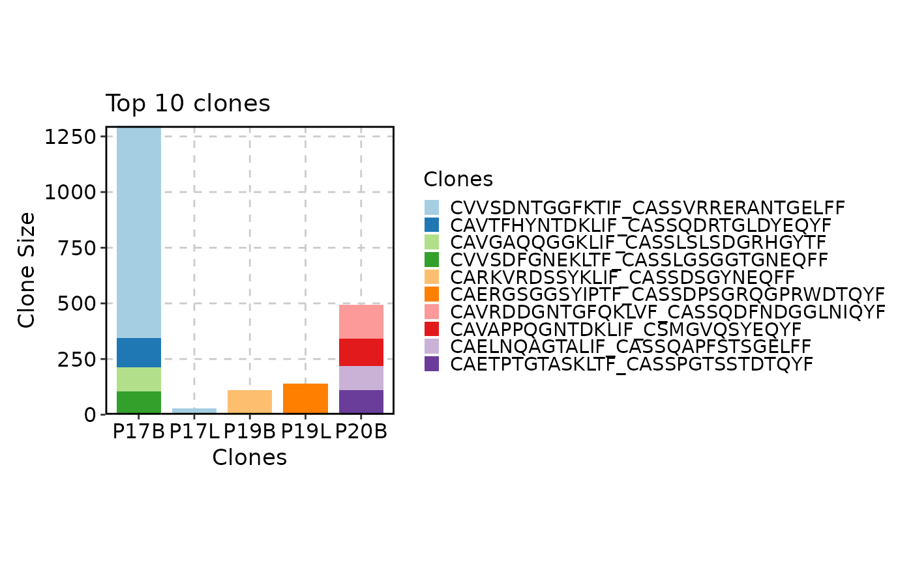
# showing the top 10 clones in P17B and in P17L, with the clones relabeled
ClonalStatPlot(data, clones = "top(10, group_by = 'Sample')", group_by = "Sample",
groups = c("P17B", "P17L"), relabel = TRUE, values_by = "fraction",
title = "Top 10 clones in P17B and in P17L (relabelled)")
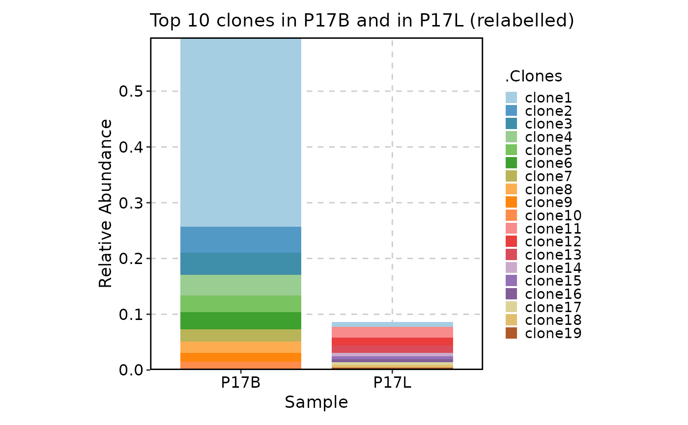
# showing the top 10 clones in each sample using violin plots
ClonalStatPlot(data, group_by = "Sample",
plot_type = "violin", clones = "top(10, group_by = 'Sample')",
subgroup_by = "CellType", subgroups = c("CD4", "CD8"), add_box = TRUE,
comparison = TRUE, title = "Violin plots showing top 10 clones in each sample")
#> Warning: [Box/Violin/BeeswarmPlot] Some pairwise comparisons may fail due to insufficient data points or variability. Adjusting data to ensure valid comparisons.
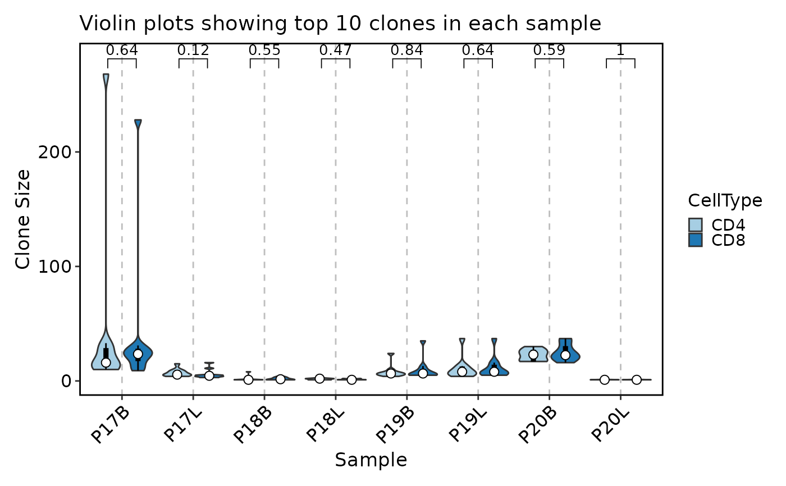
# showing selected clones in P17B and P17L
ClonalStatPlot(data, group_by = "Sample", groups = c("P17B", "P17L"),
clones = c("CVVSDNTGGFKTIF_CASSVRRERANTGELFF", "NA_CASSVRRERANTGELFF"),
title = "Selected clones in P17B and P17L")
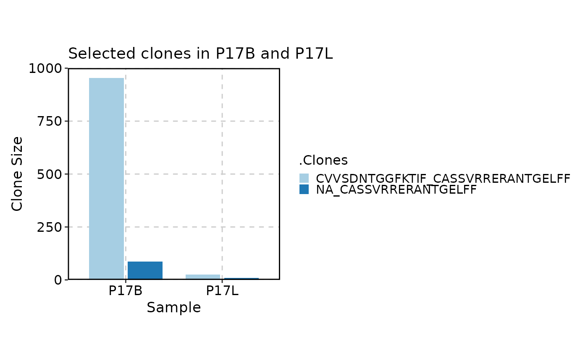
# facetting is supported, note that selection of clones is done within each facet
ClonalStatPlot(data, group_by = "Subject", groups = c("P17", "P19"),
facet_by = "Type", relabel = TRUE,
title = "Top 10 clones in Type B and L for P17 and P19")
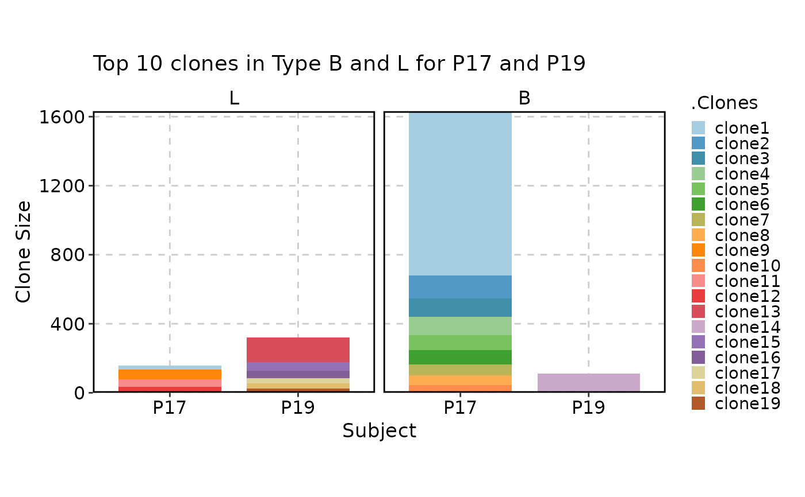
# as well as splitting
ClonalStatPlot(data, group_by = "Subject", groups = c("P17", "P19"),
split_by = "Type", relabel = TRUE)
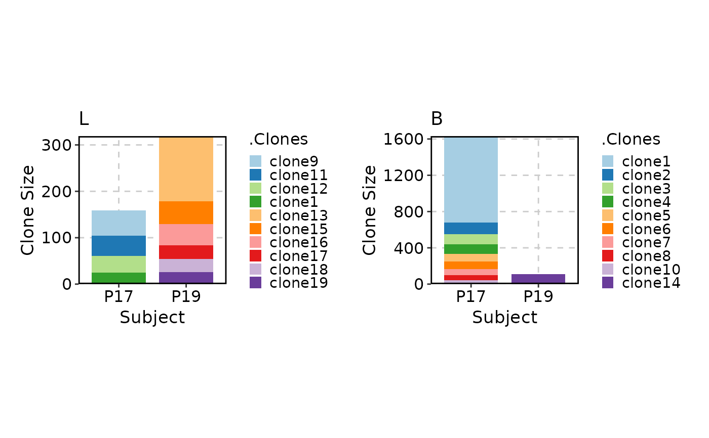
# showing top 10 shared clones between P17B and P17L
ClonalStatPlot(data, group_by = "Sample", groups = c("P17B", "P17L"),
clones = "shared(P17B, P17L, group_by = 'Sample', top = 10)", relabel = TRUE,
title = "Shared clones between P17B and P17L")
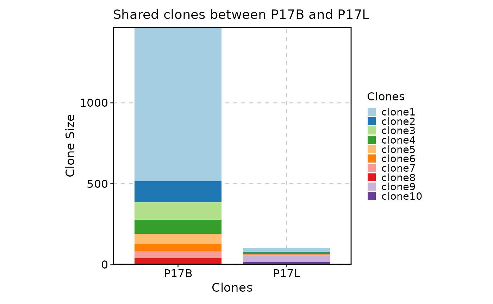
# showing clones larger than 10 in P17L and ordered by the clone size in P17L descendingly
ClonalStatPlot(data, group_by = "Sample", groups = c("P17B", "P17L"),
clones = "sel(P17B > 10, group_by = 'Sample', top = 5, order = desc(P17B))",
relabel = TRUE, position = "stack", title = "Top 5 clones larger than 10 in P17B")
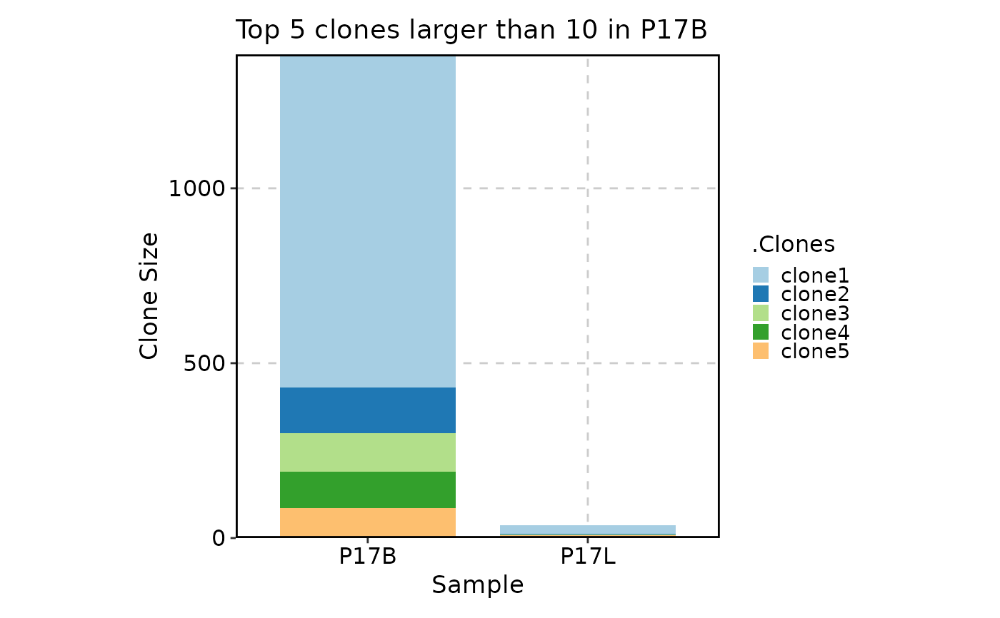
# using trend plot
ClonalStatPlot(data, group_by = "Sample", groups = c("P17B", "P17L"),
clones = "sel(P17L > 10 & P17B > 0, group_by = 'Sample')", relabel = TRUE,
plot_type = "trend", title = "Clones larger than 10 in P17L and existing in P17B")
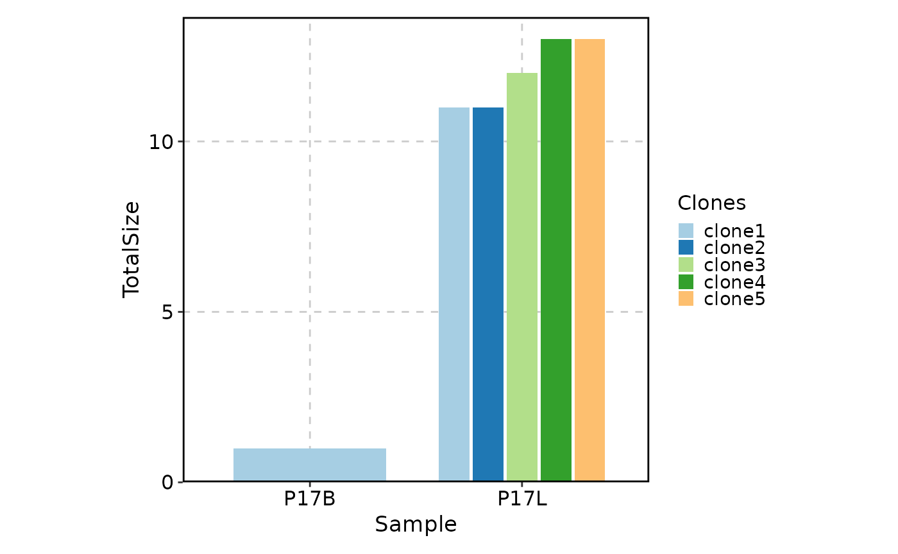
# using heatmap
ClonalStatPlot(data, group_by = "Sample", groups = c("P17B", "P17L"),
clones = "sel(P17L > 10 & P17B > 0, group_by = 'Sample')", relabel = TRUE,
plot_type = "heatmap", show_row_names = TRUE, show_column_names = TRUE,
title = "Clones larger than 10 in P17L and existing in P17B (heatmap)")
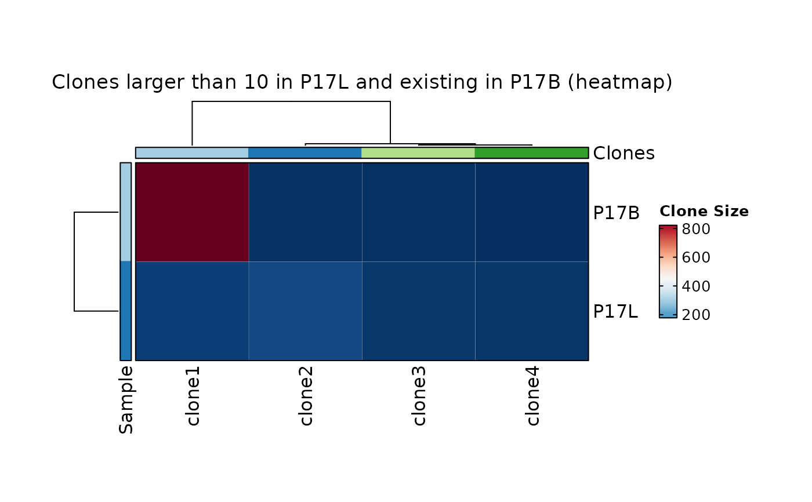
# using pies with subgroups for groups of clones
ClonalStatPlot(data, group_by = "Sample", groups = c("P17B", "P17L"),
clones = list(
ExpandedClonesInP17L = "sel(P17L > 20, group_by = 'Sample')",
ExpandedClonesInP17B = "sel(P17B > 20, group_by = 'Sample')"
), subgroup_by = "CellType", pie_size = sqrt,
plot_type = "pies", show_row_names = TRUE, show_column_names = TRUE,
title = "Clones larger than 20 in P17L and P17B (pies with subgroups by CellType)")
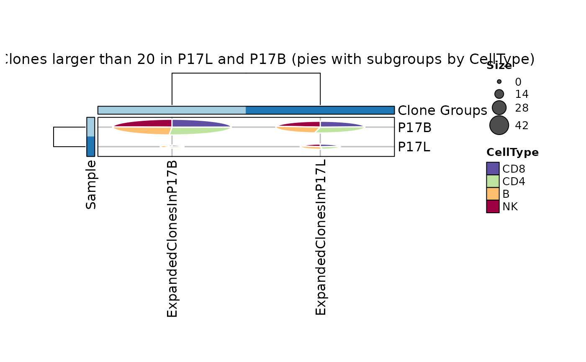
# using heatmap with subgroups for groups of clones
ClonalStatPlot(data, group_by = "Sample", groups = c("P17B", "P17L"),
clones = list(
ExpandedClonesInP17L = "sel(P17L > 20, group_by = 'Sample')",
ExpandedClonesInP17B = "sel(P17B > 20, group_by = 'Sample')"
), subgroup_by = "CellType", pie_size = sqrt, within_subgroup = FALSE,
plot_type = "heatmap", show_row_names = TRUE, show_column_names = TRUE,
title = "Clones larger than 20 in P17L and P17B (pies with subgroups by CellType)")
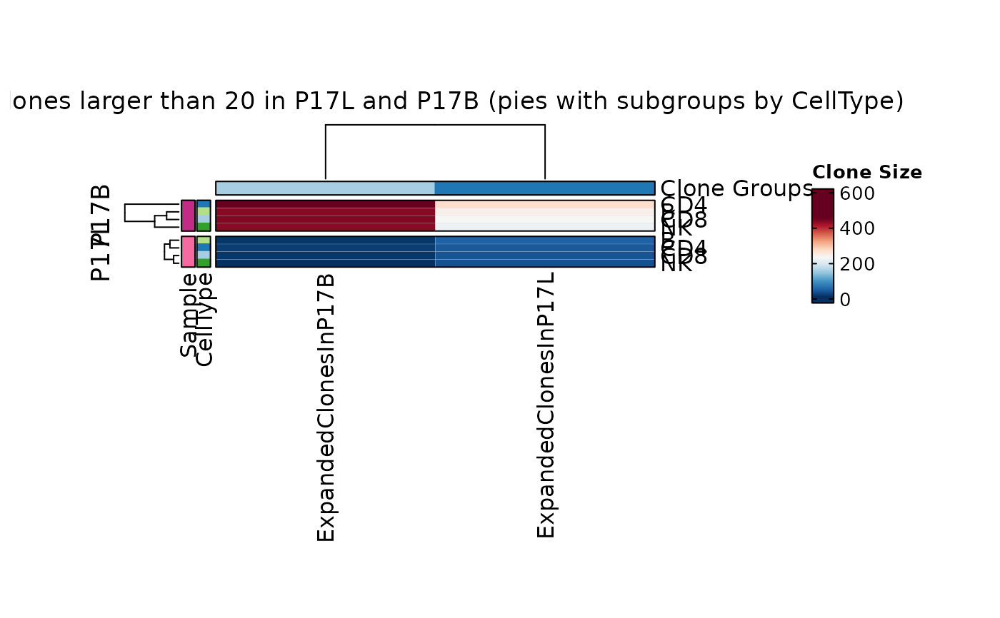
# using clone groups and showing dynamics using sankey plot
ClonalStatPlot(data, group_by = "Sample", groups = c("P17B", "P17L"),
clones = list(
"Hyper-expanded clones in P17B" = "sel(P17B > 10, group_by = 'Sample')",
"Hyper-expanded clones in P17L" = "sel(P17L > 10, group_by = 'Sample')"
), plot_type = "sankey", title = "Hyper-expanded clones in P17B and P17L")
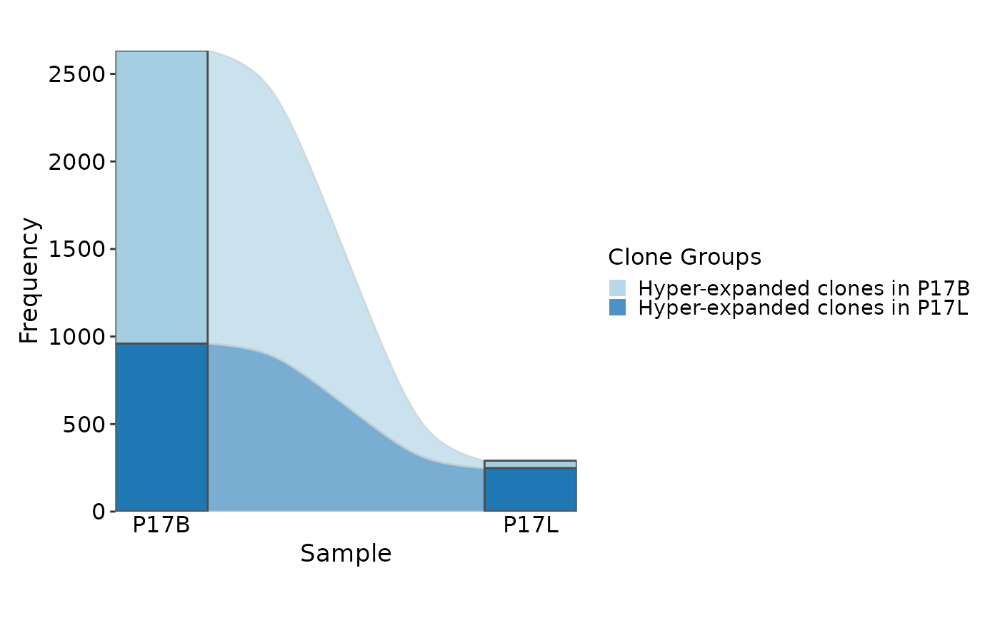
# col plot
ClonalStatPlot(data, clones = "top(5, group_by = 'Sample')", plot_type = "col",
title = "Top 5 clones in each sample (col plot)")
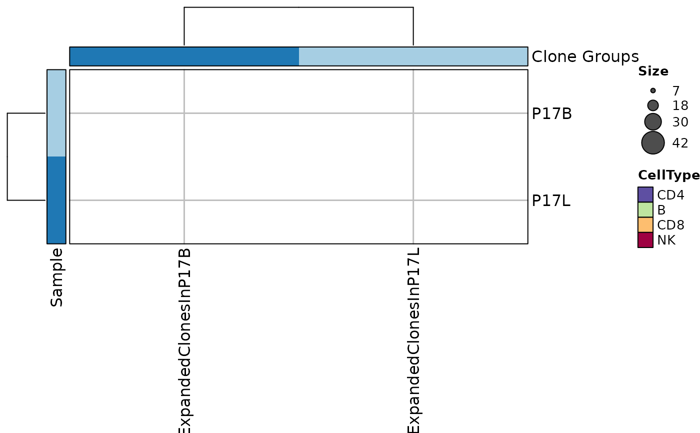
ClonalStatPlot(data, clones = "top(5, group_by = 'Sample')", plot_type = "col",
values_by = "fraction", facet_scale = "free",
title = "Top 5 clones in each sample (col plot, showing fraction)")
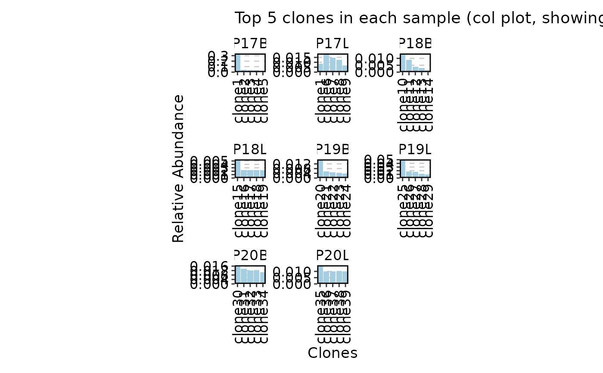
ClonalStatPlot(data, plot_type = "col", groups = c("P17B", "P17L"),
facet_ncol = 1, legend.position = "right",
relabel = TRUE, fill_by = ".Clones", fill_name = "Clones")
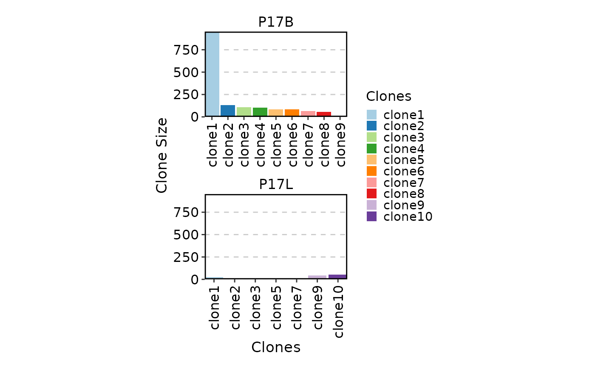
# Rename groups
ClonalStatPlot(data, plot_type = "col", groups = c(P17B = "B", P17L = "L"),
facet_ncol = 1, legend.position = "right",
relabel = TRUE, fill_by = ".Clones", fill_name = "Clones")
# }